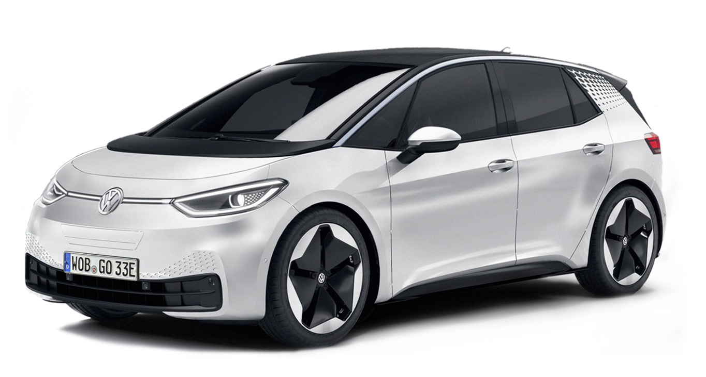
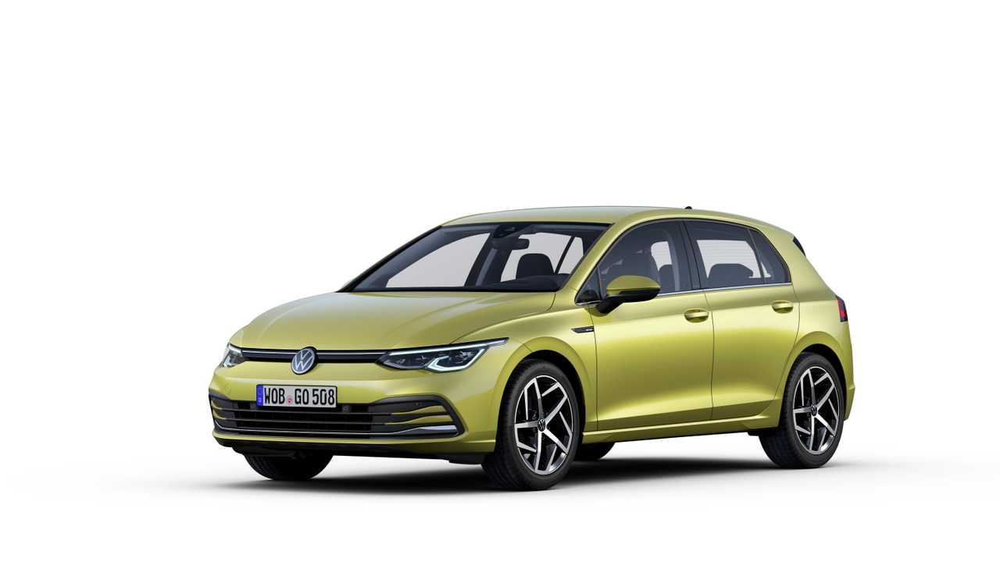

Inside EV's
About EV's
If you’re thinking of driving an electric car, the upfront or monthly leasing cost can be higher than an equivalent petrol or diesel model. However, in most other regards an electric vehicle (EV) will be cheaper to run, which potentially adds up to large savings over time.
The electric motors, batteries and transmission of electric vehicles have many fewer moving parts than those of a petrol or diesel car, and this means you can save money, as they are cheaper to maintain and repair. EV batteries also have long warranties – usually eight years – which tends to be more than the warranty for the car itself. Despite their relative simplicity versus a combustion car, EVs do still need regular servicing, though. As they are heavier, tyres and suspension parts may wear out more quickly.
Costs of Running an EV vs a petrol car (price from November 2021)| Vehicle |  VW ID.3 58kWh |
 VW Golf 1.5 TSI 150 |
|---|---|---|
| Price | £28,435 (including PICG) | £25,080 |
| Lease (month) | £308 | £288 |
| VED | £0 | £180 (first year) |
| BIK | 1 percent | 29 percent |
| Fuel | £428.30 (1) | £1,575.28 (2) |
| Pence/mile | 4p per mile | 13p per mile |
| Servicing | £432.22 (3) | £386.16 (4) |
| Depreciation (after 3 years) | 46 percent | 40 percent |
Tesla Model Y Vs. Volkswagen ID.4. Comparison
BEST EVS AVAILBLE TESLA / VW ETC TESLA / VW ETC Tesla Model Y Vs. ID.4 Features.BEST EVS AVAILBLE When comparing the Tesla Model Y vs. Volkswagen ID.4, you might notice that Tesla's touchscreen is bigger, but this doesn't necessarily mean that it is better. For example, both vehicles allow you to control the temperature of your car. Although, many consumers have found the physical buttons in the new VW ID.4 for sale to be easier to use than the Tesla Model Y's tech-centered interface. CAR SPECS (RANGE, POWER, PRICE) Tesla The Long Range dual-motor version with all-wheel drive and increased range is available; it can cover a claimed 374 miles and serves up a sports car-rivalling 0-60mph time of 4.2sec. FUTURE Careful selection of recycled and recyclable materials, optimised construction techniques and the labeling of plastic parts with their material type all mean our cars can be recycled as efficiently as possib